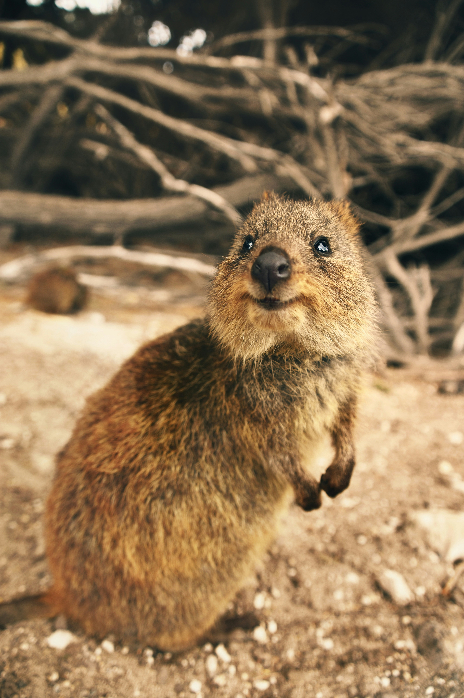

Немного о бобрах
Бобры обладают выдающимися строительными способностями. Они используют деревья и ветви для создания дамб, благодаря которым формируются водоемы, в которых они могут безопасно обитать. Дамбы бобров полезны для регулирования уровня воды в лесных речках, предотвращают повышение воды после дождей и снижают риск наводнений.

Интересный факт
Бобры – это крупные полуводные грызуны, которые обладают уникальными особенностями и играют значительную роль в экосистеме водоемов, где они обитают. Бобры известны своими крупными передними зубами, способными легко обгрызать деревья и строить дамбы на реках. Они являются искусными инженерами, создают сложные сооружения, регулируя уровень воды в водоемах и создавая благоприятные условия для многих других видов животных и растений.